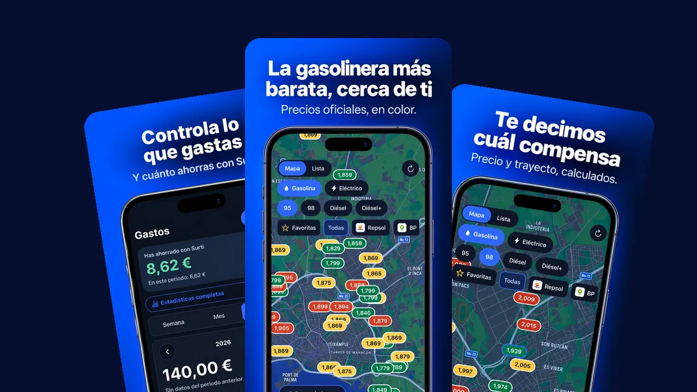
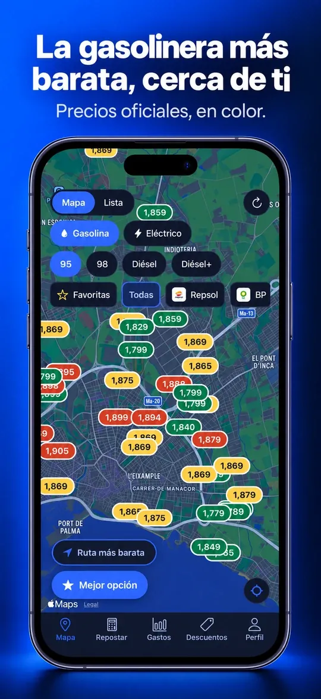
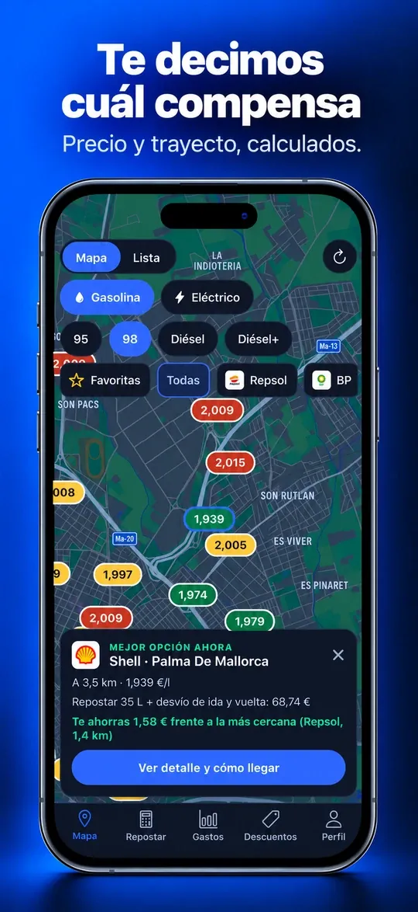
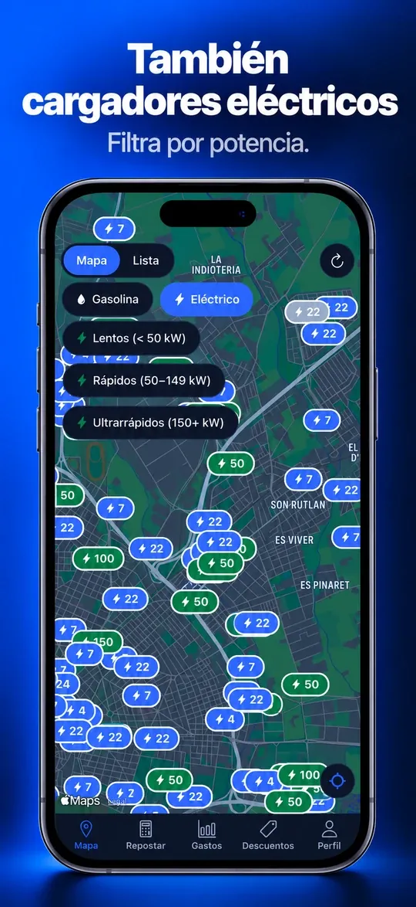
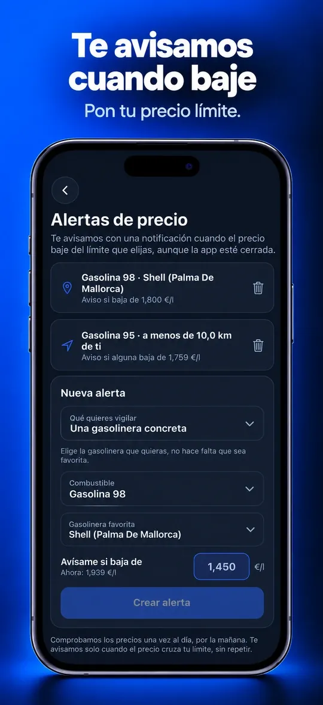
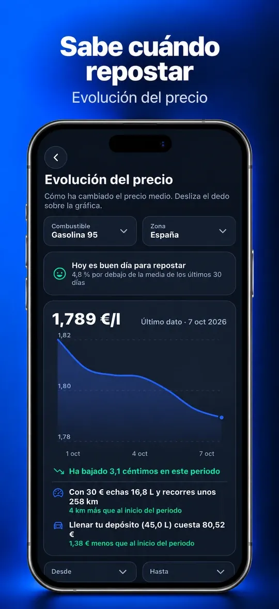
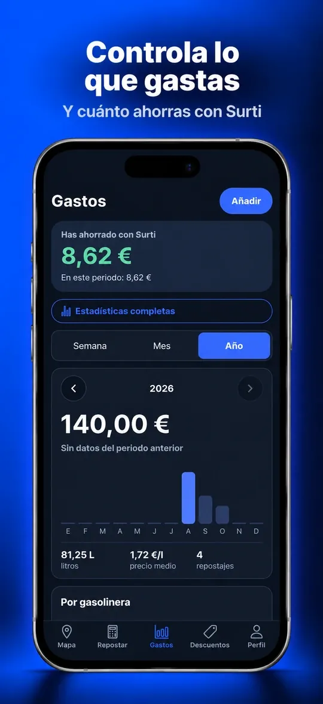
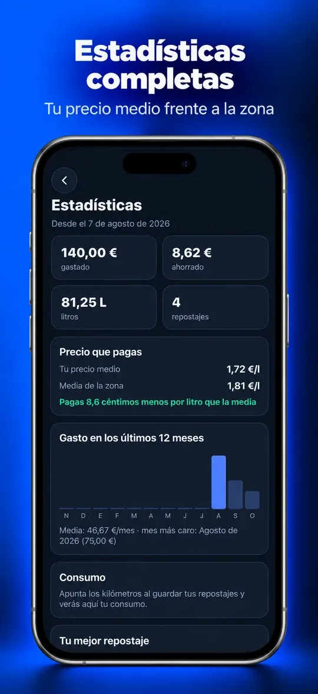

Surti
Una app para iPhone que compara los precios oficiales de las gasolineras que tienes cerca y te dice cuál compensa de verdad, contando el precio y la distancia. También encuentra cargadores eléctricos y lleva la cuenta de lo que gastas.

El problema
El precio de la gasolina cambia de una semana a otra y de una calle a la siguiente. Con el mismo coche y el mismo día, llenar el depósito puede costar varios euros más según dónde pares.
Mirar las gasolineras una a una no es práctico. Y la más barata no siempre compensa: si te pilla lejos, el desvío se come el ahorro.
Qué hace
- Mapa de precios en color. Verde es barata y rojo es cara, con los precios oficiales que publica el Ministerio.
- La mejor opción, calculada. Suma el precio y el desvío y señala la gasolinera que de verdad ahorra más.
- Cargadores eléctricos. Puntos de carga cercanos, filtrados por potencia.
- Alertas de precio. Pones tu precio límite y llega una notificación cuando baja, aunque la app esté cerrada.
- Evolución del precio. Una gráfica que dice si hoy es buen día para repostar.
- Gastos y estadísticas. Cada repostaje guardado, tu precio medio frente al de la zona y lo que llevas ahorrado.
- Widget. La gasolinera más barata, en la pantalla de inicio.
- Sin anuncios ni cuenta. No pide nombre, correo ni teléfono.
Qué hice yo
Todo el proyecto es mío: la idea, el diseño de las pantallas, el desarrollo con Expo y React Native y el backend en Supabase.
También preparé lo que rodea a la app: la web de presentación, la ficha en App Store Connect y las pruebas con usuarios reales en TestFlight antes de enviarla a revisión.
Lo que aprendí
- Publicar una app es mucho más que programarla: pruebas, ficha de la tienda, capturas, textos legales y revisión.
- Que la usen otras personas cambia las prioridades. Lo que a mí me parecía claro no siempre lo era para ellas.
- Trabajar con datos públicos reales obliga a cuidar los detalles: cómo se muestran, cada cuánto se actualizan y qué pasa cuando faltan.
Capturas







Automatización de designaciones arbitrales